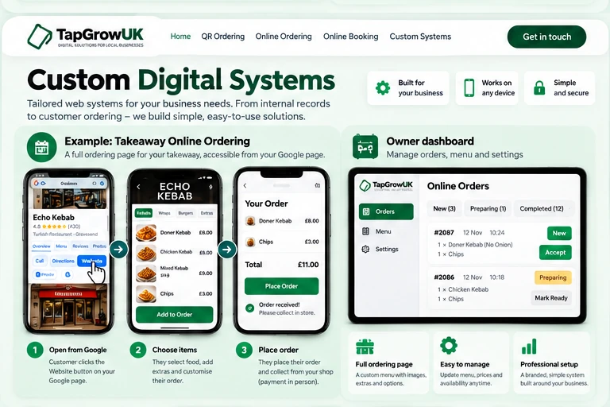

Custom QR & Digital Systems
Flexible online ordering and digital solutions, including direct takeaway collection orders from a Google Business Profile website link.
From customer to business — at a glance
Example: customers find a takeaway on Google → tap Website → order for collection.

Click the image to open a larger view.
Example direct takeaway ordering system. Customers can pay in person on collection; a live setup is tailored to the business.
How it can help your business
TapGrow can create direct ordering pages for takeaways that customers open using the Website button on a business’s Google listing. They choose food and extras, place an order for collection and pay in person. We also build other custom QR and digital workflows around individual business needs.How it works
Customer opens your Google listing
They tap Website to open your takeaway’s ordering page.
No delivery app requiredThey choose food and extras
Customers build their order and select collection.
Simple orderingYou receive the order
Your team sees the order in the dashboard and prepares it for collection.
Pay at collectionBuilt around your business
For takeaways, TapGrow can build a direct online ordering page linked to the Website button on your Google Business Profile. Customers browse food, choose extras, place orders for collection and pay at the shop. We also offer custom QR-linked and digital workflows for other business needs.
Can this be built around my own process?
Yes. That is the whole point of this service — it is made around your workflow rather than forcing you into a generic system.
Does it have to use QR codes?
Not always, but QR codes are often the easiest way to open the right page quickly.